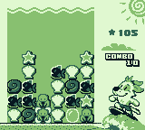
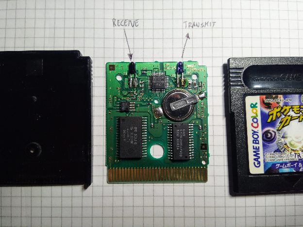

malamute
NEWSLETTER - JULY 2024
cramming a game into 32kb
It's not easy coding with a storage cap! Thankfully, Patchy Matchy uses some clever tricks in order to keep the cost down. Learning about compression and how to cram more and more game into less space is actually a fun challenge for me.
The easiest place to start is with the most storage-dense data: the graphics. One of the most effective ways I brought down the data cost is by making best use of one-bit-per-pixel (1bpp) graphics. In short, the Game Boy only shows graphics in four colors: black, dark grey, light grey, and 'white' or transparent. On the original DMG screen with the non-backlit LCD these colors would show as different shades of green-yellow. On the Game Boy Pocket it would be a more monochrome silvery black-to-white. Playing a Game Boy game on Game Boy Color yielded different results, depending on certain inputs.
If you wanted to display a black and white digital image in the most rudamentary way possible, you would simply list each pixel as a 1 or a 0, and then this would be chunked into 8's. One bit per pixel, and 8 bits per byte. So for alternating black and white pixels it would look like: 01010101. This is easy because we only have two colors to show. To add those two shades of grey to our image we need to use TWO-bits-per-pixel (2bpp) to indicate each of four colors; 00: white, 01: light grey, 10: dark grey, 11: black. Then those are chunked to fill a byte, but only four pixels will fit into the same storage space where 8 fit before. If you've ever heard the word 'bitmap' and weren't sure what it meant, its literally a map of bits which together create an image.
Here you can see an example of that with different tiles on the title screen. The Game Boy shows its graphics in tiles. The whole 8 by 8 pixel tile must be stored as either 1bpp or 2bpp. Using 1bpp where I can helps save storage space! I decided to draw the entire wave in light-gray and white to make it more recessive and make the character more dominant, but that simplified color served the dual purpose of saving storage space. Where I needed some extra tone I used dithering to fake a third color. Patchy's graphics are mostly 2bpp. Below I show the title screen, then the 1bpp and 2bpp passes.
 |
 |
 |
Because the Game Boy displays its graphics in tiles, we can re-use tiles to further reduce the amount of data we would need to show a picture. Using this tile heat map tool for GB Studio, you can see the tiles I reused coded by color. The dark red tiles are unique and have no duplicates. The ligter the tile, the more often it is reused. Tiles are reused as often as possible to reduce the amount of raw image data required. Of course, there is a trade off between how many tiles you reuse and how many must be individual tiles for the best effect. So even though the title screen is 360 individual tiles, we can use only 196 to show the entire image with a decent amount of visual variety.
 |
This technique is implemented throughout the game. In the main game screen I used 1bpp tiles for background elements, and reused them when I thought I could get away with it.
|  |
Another place where we save on storage is with compression. GBDK has a built in compression engine so all those 2bpp graphics (and even sometimes 1bpp graphics) can be squashed down to an even smaller storage size. The compressed size of the used graphics usually ends up being about 60%-80% of the original data. As I understand it, the way this compression works is by taking a set of bytes, and then whenever it sees them repeating in the set, it drops them and with a couple instructions, refers the decompressor back to the first time those bytes occurred.
That's the long and short of it. Next month I'll blog about writing music for Game Boy games.
You can pre-order a cartridge of Patchy Matchy from ModRetro, as a launch title for their new console, the Chromatic. The cartridge is also fully Game Boy compatible. You can also get it as part of their launch bundle. It ships out in December!
just interesting
GB KISS

"GB KISS was an InfraRed transfer functionality added by Hudson to some of their Gameboy games, only in Japan."
A fun novelty that you can learn more about in this reddit post and this youtube video
shoutout
I have met so many amazing and talented people through my creative pursuits I thought that I should show them off to the rest of you every month. If you're looking for some amazing pixel art, I highly recommend following my friend Tofu. She has amazing art skill and channels it into her digital work showing a style and precision for pixel art thats truly exceptional. She recently released a really interesting "So You Want to Learn Pixel Art" post on her tumblr. I always thought her work is worth studying if you plan to go deeper into game art or digital mediums for yourself. Follow Tofu on Cara, on Twitter, or check out her other socials.
 |
 |
 |
 |
 |
 |
cool stuff
Mood that lasts.#pixelart #animation pic.twitter.com/5fRGRPUVgX
— yg_fool (@yg_fool) July 14, 2024
level cleared! pic.twitter.com/9AAdDqK57M
— Tom Eccles (@stepsoversnails) July 4, 2024
Lots of fantastic animation principles happening here in this pixel art animation!
Made a showcase of games & more built with #gbdk. We want to make it easier to find what people build! https://t.co/07tYEvgOsd
— 0xbbbbbr (@0xbbbbbr) July 1, 2024
-Easy search for open source
-Scraped a lot from itchio, likely many still to add. If you know some open PR/Issue or contact mehttps://t.co/uKNvLOn67Q pic.twitter.com/FlikHUDWxq
If you're interested at all in the GBDK demoscene, or seeing what can be done with the toolset, check out this list of other projects.
games by friends
FEATURED! HIGHLY RECOMMENDED! SO MUCH FUN!
EARLY ACCESS! Purchasing the game early helps developers as they finish the game.
WISHLIST! Wishlisting costs nothing and helps developers by boosting their lauch visibility, so check out these titles!
anything to contribute?
Thanks for reading! Reach out or tag me on social media to @ohnotomsutton or reply to your newsletter email to let me know what you think or to suggest content. I'd love to get more game dev, art, and animation stuff! The goal is to have an assembly of fun, interesting or enlightening things for the first of the month, every month.
Subscribers as of 01/07/2024: 23.